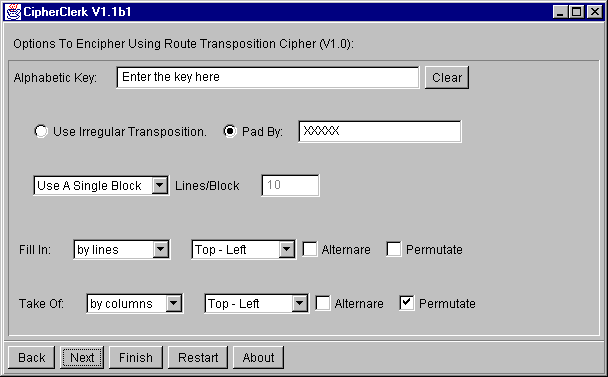

Generic Transposition Cipher
Description
The text to be processed is filled into a table, the cipher text is obtained
by reading the letters in a different way. For example, you might
fill the table line by line and read the cryptogram column by column.
For longer messages, its more convenient - for paper and pencil application
- to split the message into smaller blocks. So you may choose a square
block, a user defined block, or use a single block. CipherClerk's
Applet only requires to enter the number of lines of a block if you want
to choose a user defined block. In the other cases, the block size
is derived from the key word: If not mentioned, the number of rows matches
the number of letters in the key word.
By default CipherClerk's Applet will fill the table completely, appending
a pad
string to the plain text. By checking use irregular transposition,
you may suppress this. In such a case the empty fields of the table are
determined by writing the text left to right and line by line into the
table. If there remain some empty fields, they are marked. When the plain
or cipher text is filled into the table, these fields will remain empty.
CipherClerk's Applet offers several choices how to fill in the
table and to take of the result. Obviously, for deciphering one
must fill the table in the order it was read when it was enciphered. Note
that you must always set up CipherClerk's Applet as if you would
encipher the message. CipherClerk's Applet takes care to use you setup
correctly when deciphering.
The choices available for fill in / take of are:
by columns
The text is read/written column by column. You may specify where you want
to start: top-left, top-right, bottom-left, or bottom-right. You may permutate
the columns using a permutation based on the key word. Finally, you may
choose to trace columns in alternating directions.
by lines
The text is read/written column by column. The options are the same as
before.
by diagonals
The text is read/written along diagonals. You may choose where to start,
whether the diagonals should be traced upwards or downwards,
and whether this tracing direction should be alternated or not.
A square block is required.
spirally
The text is read/written along a spiral line. You may choose where to start,
whether the spiral is clockwise or not. If expanding is checked,
reading/writing starts at the center and processed to the specified corner.
While a square block is required, an even block size is not.
nihilist
The text is read column by column and line by line where both - columns
and lines - are permutated. If lines first is checked, the text
is read line by line and column by column, both permutated. A square block
is required.
rot. grille
A square grille is prepared: The key is truncated to a length of n^2,
e.g. to 4, 9, 16, 25, or 36 characters.
The size of the grille is chosen 2n and n^2 openings are cut into
the 4 n^2 fields of the grid. The grille is laid on the table and the text
is read/written through the holes left to right, line by line. Then the
grille is rotated by 90° clockwise (or counter-clockwise)
and text is continued to by read/written.
Ofcourse the holes are set up in a way that each field of the table
is exactly visible once: The table is divided into 4 squares filed, each
of the size n x n. The fields in the top left square are numbered (left
to right, top to bottom) 1 to n^2. The fields in the other squares are
numbered so that when rotating the grill the numbers in a field remain
unchanged. For example, if the key length is 9, we obtain:
| 1 |
2 |
3 |
7 |
4 |
1 |
| 4 |
5 |
6 |
8 |
5 |
2 |
| 7 |
8 |
9 |
9 |
6 |
3 |
| 3 |
6 |
9 |
9 |
8 |
7 |
| 2 |
5 |
8 |
6 |
5 |
4 |
| 1 |
4 |
7 |
3 |
2 |
1 |
Now the key word is converted into a numerical key the normal way. For
example, the key DAVID KAHN yields 3-1-9-6-4-7-2-5-8. The
first/second/third/forth quarter of these numbers, 3-1 / 9-6
/ 4-7 / 2-5-8, denotes the position of the holes in the first
sub-square. Thus the resulting grille, with holes denoted by underscores,
is
| _ |
X |
_ |
X |
|
X |
| X |
X |
X |
X |
X |
X |
| X |
X |
X |
_ |
_ |
X |
| X |
X |
X |
X |
_ |
X |
| X |
X |
X |
X |
_ |
X |
| X |
_ |
_ |
X |
_ |
X |

To proceed, you may